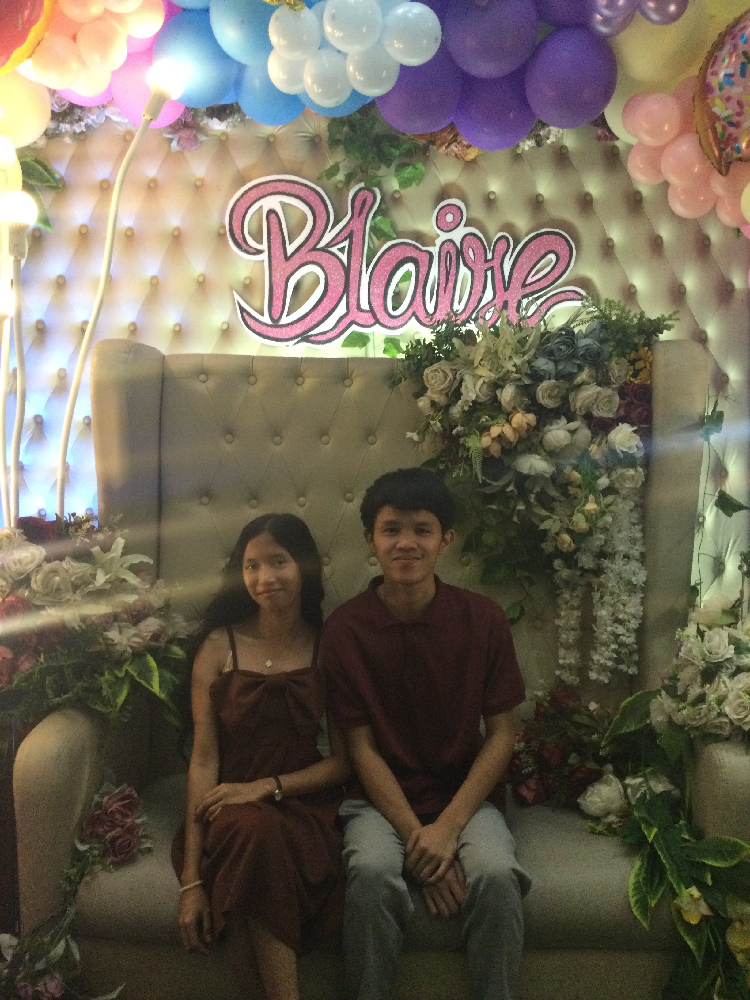
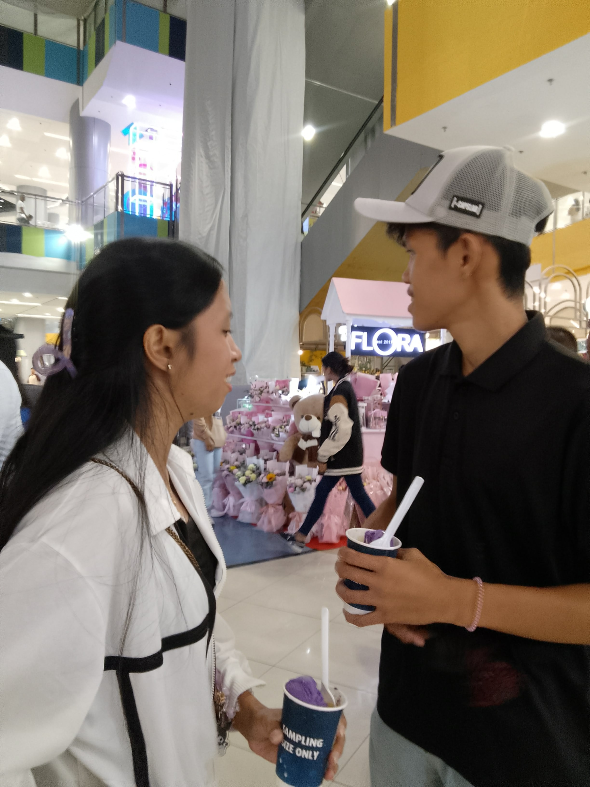
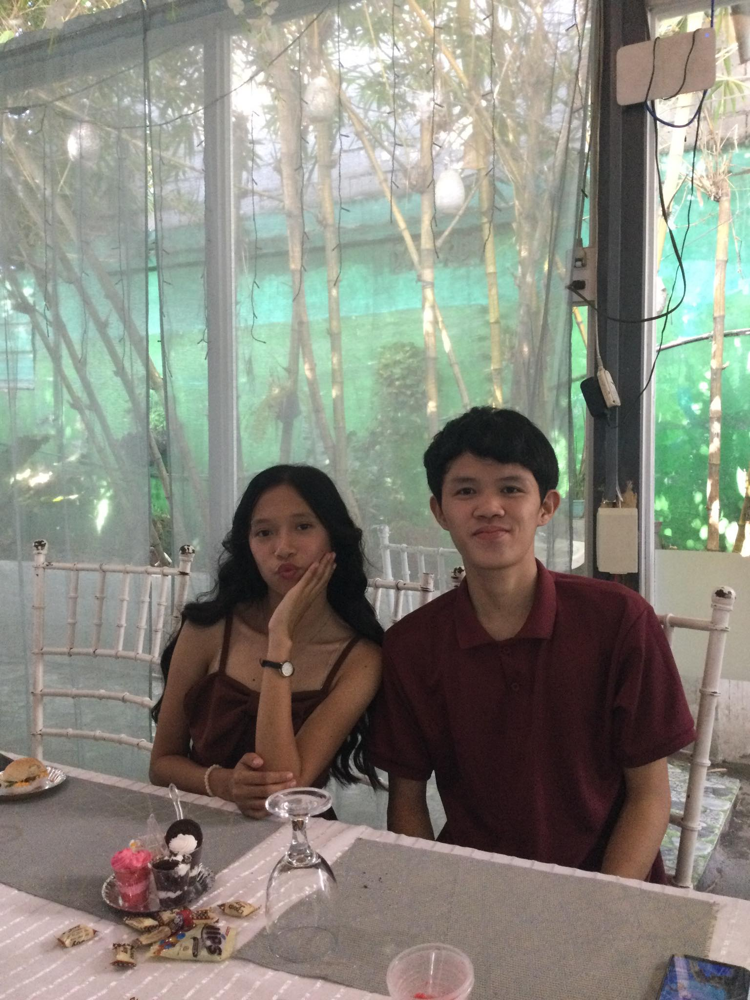
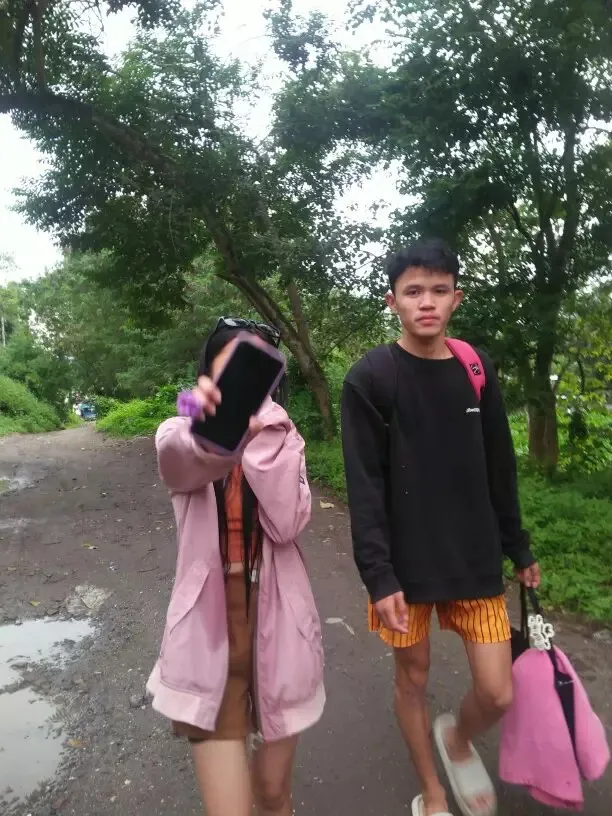

You got a mail!
Click to open your mail
Happy 3rd Monthsary
My Love
♥
Happy Monthsary My Love!
Thank you bam kay gi pili japon ko nimo biskan di man nako mahatag tanan na gina hando nimo ug sorry kong ga ugtas ka sa kong unsa ko ka wlay bout sa imoha HAHAHA




My Favorite Person
I love you so much
Happy 3rd Anniversary Bammy thank you for always choosing me, thank you for everything sa pag sabot sa sitwasyon nako sa pag care sa akoa biskan dili mana masuklian kong unsay mahimo nako thank you kaayo sa mga adlaw na mas gipili nimo na maka uban ko kisa byaan ko you know namn kong unsa ka gubot sa life nako biskan bati pa kaayo ko ug batasan mas gi pili nimo na mo stay sa akoa thank you kaayo sa tanan² mao rani dai
— Nag Mamahal, Idoy
Little Pieces of Us
This song reminds me of you
Ikaw Lamang — Silent Sanctuary
A Little Bouquet, Just for You
Petals fall, but what I feel for you only grows.
Happy 3rd Monthsary
My Love
♥